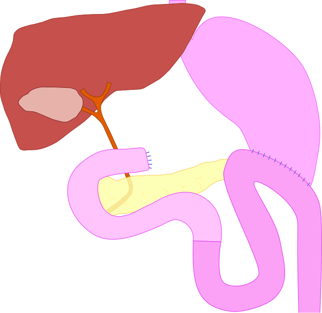
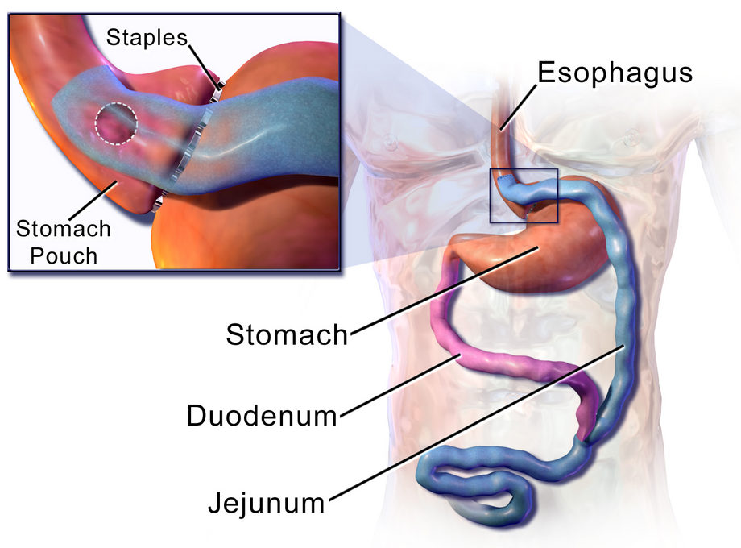

סיבוכי ניתוחי קיבה
תסמונות אחרי כריתת קיבה וסיבוכי ניתוחים בריאטריים: דמפינג, לולאות, דליפה, היצרות, כיב, בקע פנימי וחוסרים תזונתיים
בסוף המפגש תדעו
- להבדיל בין דמפינג מוקדם למאוחר, לאבחן ולטפל
- לזהות תסמונת הלולאה המובילה, חסימת הלולאה היוצאת וגסטריטיס מרה
- לחשוד בדליפה אחרי ניתוח בריאטרי ולדעת את עקרונות הטיפול
- לאבחן היצרות, כיב בחיבור ובקע פנימי אחרי מעקף קיבה
- למנות את החוסרים התזונתיים אחרי ניתוחי קיבה ואיך מונעים אותם
שלושה דברים שהניתוח לוקח
- התסמונות לא תלויות בסיבה לניתוח: כיב, סרטן או השמנה
- 1–5% מהמטופלים נשארים עם נכות קבועה מהתסמינים
- שחזורים: Billroth I (stomach ל-duodenum), Billroth II (jejunal loop ל-stomach, נשארת לולאה מובילה עם מרה), Roux-en-Y (לולאה מבודדת, המרה נכנסת רחוק מה-stomach)
- רוב התסמונות שכיחות אחרי Billroth II. הפתרון הניתוחי השכיח: המרה ל-Roux-en-Y

מוקדם או מאוחר?
| דמפינג מוקדם | דמפינג מאוחר | |
|---|---|---|
| מתי | תוך שעה מהארוחה, רוב התסמינים תוך 30 דקות | 1–3 שעות אחרי. פחות שכיח |
| מנגנון | מזון היפר-אוסמולרי במעי, נוזל עובר ללומן, הורמונים | פחמימות נספגות מהר, אינסולין מוגזם (GLP-1), היפוגליקמיה |
| תסמינים | כאב, בחילה, שלשול, נפיחות. הזעה, דופק מהיר, כאב ראש, עילפון | הזעה, רעד, סחרחורת, דופק מהיר, בלבול |
| העמסת סוכר 75 גרם | אחרי 30 דקות: המטוקריט עולה ב-3% לפחות, או דופק ב-10 לפחות | סוכר מתחת ל-50 מ״ג/ד״ל בין שעה לשלוש |
הלולאות והמרה
- חסימה של ה-duodenal limb, לרוב כשהיא ארוכה
- מרה ומיצי לבלב מצטברים: כאב ונפיחות ואז הקאה פורצת של מרה שמקלה מיד
- כרוני: צמיחת חיידקים, חוסר B12, תת-ספיגת שומן
- CT: לולאה מובילה מורחבת
- מוקדם אחרי הניתוח: לתקן מהר, סכנת נמק ופיצוץ ה-duodenal stump
- נדירה. רובה בחודש הראשון
- כאב קוליקי בשמאל העליון, הקאות מרה, נפיחות
- צילום או CT עם חומר ניגוד: החומר לא נכנס ללולאה היוצאת
- הידבקויות, היצרות, אינטוסוספציה, בקע מאחורי החיבור
- כמעט תמיד ניתוח
- כאב אפיגסטרי קשה, הקאות מרה, ירידה במשקל
- ה-mucosa שבירה ואדומה "כמו בשר"
- אבחנה של שלילה. מיפוי מרה מראה חזרה ל-stomach
- תרופות לא עוזרות באופן עקבי
- ניתוח: Roux-en-Y עם לולאה של 45–60 ס״מ
אטוניה, Roux stasis, שלשול ובזואר
מעקף Roux-en-Y: איפה כל סיבוך

👆 לחצו על אזור בציור כדי לקרוא עליו
כאן רוב הדליפות במעקף (היום מתחת ל-1%). היצרות ב-2–7%, 4–6 שבועות אחרי. כיב בחיבור ב-2–14%, יותר כשה-gastric pouch גדול
דימום מקו השדכנים. אם נפתח חיבור (פיסטולה) ל-gastric remnant, חומצה מגיעה לחיבור והכיב לא נרפא. הטיפול: ניתוח
לא רואים אותו בגסטרוסקופיה רגילה. בחסימה מתחת, הוא וה-biliopancreatic limb מתרחבים לאחור עד פיצוץ קו השדכנים. ב-CT מחפשים gastric remnant מורחב
ה-duodenum וה-proximal jejunum, כ-50 ס״מ מ-ligament of Treitz. מובילה מרה ומיצי לבלב. כאן נספג ברזל ולכן אחרי מעקף יש חוסר ברזל ב-15–40%
100–150 ס״מ, עולה לפני ה-colon. בין ה-mesentery שלה ל-mesocolon נמצא ה-Petersen's space, מקום של בקע פנימי. גם Roux stasis: הקאות ולולאה מורחבת
הפתח ב-mesentery מתחתיו נסגר בתפר לא נספג, כדי למנוע בקע פנימי. חסימה כאן חוסמת גם את ה-biliopancreatic limb
רק מכאן המזון פוגש מרה ומיצי לבלב ונספג כרגיל. ככל שהיא קצרה יותר (כמו ב-BPD-DS), יותר תת-ספיגה וחוסרים
הסיבוך המסוכן ביותר
- מעקף: בעיקר מה-gastrojejunostomy. מוקדמת, עם סימני הלם: טכיקרדיה, טכיפנאה, כאב
- שרוול: לרוב 1–4 שבועות אחרי, לפעמים בשקט: זיהום ומורסה בלי הלם. בדרך כלל ליד הקצה העליון, מעל היצרות ב-incisura angularis
- מוקדמת (עד 48 שעות): כשל שדכן או פגיעה ברקמה. מאוחרת: איסכמיה ולחץ גבוה בשרוול
- אבחנה: CT עם חומר ניגוד בשתייה, צילום בליעה ולפעמים לפרוסקופיה
- סטנט מכוסה 4–6 שבועות. הבעיה: נדידה. בשרוול לעיתים שניים
- ואקום אנדוסקופי בחלל: 8–12 טיפולים
- קליפס גדול: בעיקר לפיסטולה כרונית מתחת ל-1 ס״מ
- פיגטייל לניקוז פנימי, או ספטוטומיה
כשהאוכל לא עובר וכשכואב
- מעקף: ב-gastrojejunostomy ב-2–7%. יותר עם שדכן מעגלי. מופיעה 4–6 שבועות אחרי: קודם מוצקים ואז נוזלים
- הרחבה בבלון. לא יותר מ-3–5 מ״מ בכל פעם, לעיתים כמה פעמים. לחפש סיבה: עישון ו-NSAIDs
- שרוול: פחות מ-1%, ב-incisura. הרחבה או סטנט. לפעמים המרה למעקף
- 2–14% מהמעקפים. כאב אפיגסטרי קבוע ו"קודח"
- ה-gastric pouch גדול יותר = יותר תאים מפרישי חומצה. כל 5 סמ״ק נוספים: סיכוי גבוה פי 2.4
- מניעה: טיפול ב-H. pylori לפני הניתוח
- טיפול: PPI, בלי NSAIDs ובלי עישון. רוב הכיבים נרפאים
- לא נרפא: לחפש פיסטולה ל-gastric remnant (מקור חומצה). צריך ניתוח
בקע פנימי: לא לחכות
- חסימת מעי אחרי מעקף, קלינית או בהדמיה: ניתוח. בגלל בקעים פנימיים, חניקה שכיחה
- CT עם חומר ניגוד בשתייה ובווריד: לראות את ה-gastric remnant, הלולאות וסיבוב של ה-mesentery
- הסכנה: התרחבות לאחור של ה-biliopancreatic limb ושל ה-gastric remnant, עד פיצוץ קו השדכנים וצפקת
- חוסר תאבון וכאב לסירוגין אחרי ירידה גדולה במשקל: גם זה יכול להיות בקע פנימי
הסיבוך הארוך של השרוול
- GERD חדש או מחמיר בעד 30%. קובע את שביעות הרצון
- מנגנון: שינוי ב-angle of His ובסיבי ה-LES ולחץ גבוה ב-stomach צינורי וצר. היצרות ב-incisura מחמירה
- SLEEVEPASS אחרי 10 שנים: 11.6% עברו המרה למעקף בגלל רפלוקס. ב-49% מהנבדקים התסמינים החמירו
- אין fundus, אין פונדופליקציה. תקן הזהב: המרה למעקף. לפעמים תיקון בקע סרעפתי או טבעת מגנטית
חוסרים: מה, למה ואיך מונעים
| חוסר | למה | מה עושים |
|---|---|---|
| ברזל | נספג ב-duodenum וב-proximal jejunum, שנעקפים. במעקף: חוסר ב-15–40%, אנמיה עד 20% | ברזל בפה (גלוקונאט נספג טוב בלי חומצה) |
| B12 | אין פקטור פנימי. במעקף 15–20%, רק לעיתים אנמיה | לכל החיים אחרי כריתת קיבה. תת-לשוני, תרסיס לאף או זריקות |
| סידן ו-D | תת-ספיגה. מחלת עצם כ-5 שנים אחרי | סידן עם ויטמין D |
| A, D, E, K | עקיפת ה-duodenum, תת-ספיגת שומן | תוספים, בעיקר אחרי BPD-DS |
| חלבון | 8% אחרי BPD-DS (common channel קצר) | אשפוז, הזנה תוך-ורידית 2–3 שבועות, לפעמים הארכת ה-common channel |
| תיאמין (B1) | הקאות ממושכות | תיאמין בווריד לפני Wernicke |
טבעת, קרישים ואבני מרה
- החלקה: דיספאגיה, רגורגיטציה, צרבת, אספירציה. נדיר: חניקת ה-stomach בחירום
- בצילום: הטבעת לא בזווית הרגילה (בין 7 ל-2 לפי השעון) אלא אנכית או אופקית
- חדירה ל-stomach, הרחבת ה-esophagus. בשלושה רבעים מהמוצאים יש הפרעת תנועה ב-esophagus
- מסירים או ממירים
- 17% ממקרי המוות
- עד 80% מהנפטרים עם עדות לקרישים
- עם מגפי לחץ, הליכה מוקדמת והפרין: 0.23%
- אבנים או בוצה בכ-30% אחרי מעקף. אורסודיאול 6 חודשים: 3%
- דיכאון והפסקת אכילה
- התייבשות מהקאות: נוזלים בווריד כשיש ספק
מטופל אחרי ניתוח קיבה עם כאב בטן
מחקרים שכדאי להכיר
2,507 מטופלים ב-12 מרכזים בשבדיה. ניתוח חוזר בגלל חסימת מעי דק תוך 10 שנים: 7.8% עם סגירה לעומת 14.9% בלי (SHR 0.42)
Stenberg E et al. JAMA Surg 2023;158:709-17240 מטופלים. דלקת ושט 31% אחרי שרוול לעומת 7% אחרי מעקף. ברט 4% בשתי הקבוצות. ניתוח חוזר 15.7% לעומת 18.5%
Salminen P et al. JAMA Surg 2022;157:656-66217 מטופלים. המרה לניתוח אחר בגלל ירידה לא מספקת או רפלוקס: 29.9% אחרי שרוול לעומת 5.5% אחרי מעקף. יותר רפלוקס חדש אחרי שרוול
Kraljević M et al. JAMA Surg 2025;160:369-7710 מחקרים, 680 מטופלים בגסטרוסקופיה אחרי שרוול. ברט ב-11.6%, בלי קשר לתסמיני רפלוקס. הסיכון לדלקת ושט עלה ב-13% בכל שנה
Qumseya BJ et al. Gastrointest Endosc 2021;93:343-52חמישה דברים לקחת למחלקה
- דמפינג מוקדם: תוך שעה, נוזלים ואוסמולריות. מאוחר: 1–3 שעות, היפוגליקמיה. קודם כול תזונה
- הקאה פורצת של מרה שמקלה: לולאה מובילה. הפתרון הניתוחי לרוב המרה ל-Roux-en-Y
- אחרי ניתוח בריאטרי: טכיקרדיה היא דליפה עד שהוכח אחרת
- חסימה אחרי מעקף היא בקע פנימי עד שהוכח אחרת: CT וחדר ניתוח
- ברזל, B12, סידן ויטמין D ותיאמין למי שמקיא. מעקב לכל החיים